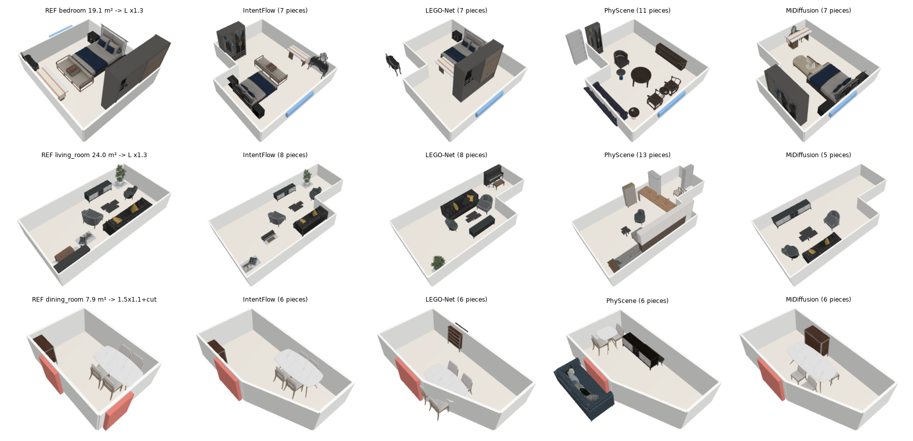
When furnishing a living space, occupants frequently seek to transfer a proven interior arrangement from a reference home into a new environment — retaining functional groupings such as the bed framed by its nightstands, or a living-room cluster where the sofa faces the media console across a coffee table. However, realistic target rooms rarely share the same spatial configuration; they exhibit divergent dimensions, non-congruent polygonal floor outlines, and mismatched door and window placements (Fig. 1). An expert interior designer performing this transfer does not generate an arrangement from scratch. Instead, they execute reference-to-room arrangement transfer: identifying the groupings to preserve, pruning secondary items that exceed the room's capacity, introducing functional additions when the room expands, and adjusting continuous poses so that functional intent, wall orientations, and circulation paths remain coherent. Formally, given a furnished reference room \(A\) and an empty polygonal target room \(B\), the objective is to synthesize a feasible layout in \(B\) that transfers the relational design intent of \(A\) while complying with architectural and physical feasibility.
Solving this retargeting problem introduces four challenges:
Existing indoor layout synthesizers [7] [8] [9] [6] [5] sample plausible scenes conditioned on floor polygons, object lists or text, but discard the reference's spatial arrangement; MiDiffusion [5] accepts an object list but not its continuous spatial groupings. Rearrangement models such as LEGO-Net [4] regularize disordered scenes toward the arrangements of their training corpus rather than transferring intent across non-isomorphic floor plans, and without the room's walls as constraints they leave 13.0% of the pieces outside the room on our benchmark. Classical layout optimization methods [10] [11] optimize hand-crafted energy terms without learning from designers which items to prune, add, or anchor.
To overcome these limitations, we present IntentFlow, a hybrid generative-optimization framework that learns relational design transfer from designers' rooms while enforcing physical feasibility by a constrained projection (Fig. 2). We construct 68,958 pairs of real rooms from 3D-FRONT [1] — rooms sharing furniture, rooms a designer furnished smaller or larger from the same set, and rooms with part of their furniture masked out — capturing real layout retargeting across scales, shapes, and partial arrangements. A single transformer trunk attends jointly to the reference layout (framed into the target's coordinate frame), the boundaries of both rooms, and the generation slots (Fig. 3). Discrete inventory adaptation is governed by a state head, delete and add hotspot maps, and a sequential next-action policy. Continuous placement is a rectified flow [2] transporting the pieces from the informative framed reference toward the designer's configuration.
We establish a division of labour between learning and geometric optimization: the network learns the subjective design decisions (what to prune, what to add, and the continuous transport), while the physical constraints are resolved by a mesh-level augmented Lagrangian projection \(\Pi_\theta\). \(\Pi_\theta\) enforces non-penetration and room containment, with top-view overlap allowances measured in real rooms, pursues doorway clearance and reachability, and restores the reference-prescribed groups and wall contacts. Spatial capacity is resolved by constrained decoding over 16 candidate edit plans, keeping the most probable plan that \(\Pi_\theta\) can make feasible. Finally, a style head decouples appearance from placement, enabling 3D asset style transfer with small arrangement drift (\(D\le0.034\)). Table 1 lists which decisions are learned and which are rules.
Our main contributions are:
Generative indoor scene synthesis. Indoor scene synthesis has progressed from autoregressive transformers [7] [8] and denoising diffusion models [9] to conditioning on text [13] and language or vision-language guidance [14] [15]. To reduce physical implausibility, PhyScene [6] adds collision and reachability guidance during diffusion sampling. MiDiffusion [5] combines discrete category selection with continuous bounding-box diffusion and supports partial completion and pre-specified object sets. These methods synthesize a scene conditioned on an empty floor polygon, a category list or a semantic graph; a reference room enters at most as such a list, so its continuous arrangement, functional groupings and wall alignments are not transferred. IntentFlow transfers the reference's continuous relations across non-isomorphic floor plans.
Indoor rearrangement and layout optimization. Scene rearrangement restructures disorganized assets into coherent configurations. LEGO-Net [4] learns to iteratively denoise messy scenes toward the arrangements of its training corpus. It keeps a fixed inventory, does not receive the room's walls as constraints, and moves pieces toward global data priors rather than preserving the relations of a source scene; transplanted into non-congruent rooms, it leaves pieces across walls and in each other (§5.2). Classical layout methods optimize interior-design guidelines by stochastic search or energy minimization [10] [11] [16]. They can enforce non-overlap, but an energy has no notion of which secondary pieces a designer gives up when a room shrinks, what complementary pieces they add, or which wall a group belongs to.
Relational scene graphs and set adaptation. Relational layout pipelines often plan a scene graph over categorical predicates (e.g., surrounding, against-wall) before instantiating boxes [17] [18] [19]. Categorical graphs are brittle under continuous transformations: aspect-ratio changes and slanted walls distort distances and orientations continuously. IntentFlow uses no relation categories: as in Graphormer [12], continuous geometric descriptors of the reference's pairs enter the attention as additive biases. On the discrete side, adapting an inventory to the room connects to set-based architectures [20] [21] and masked modelling [22]. Instead of a density budget, our next-action policy learns sequential edits from intermediate states between a reference and a designer's room and stops when stopping is its most probable action; the plan search then lets physics decide how far the plan must go.
Flow matching and constrained feasibility. Flow matching [23] and rectified flow [2] regress velocity fields along straight paths between two distributions. Where standard flow models transport Gaussian noise to data, IntentFlow starts from an informative source, the reference framed into the target floor plan. A generator can penalize collisions with soft losses in training, but it meets non-convex boundary conditions only up to its regression error. We therefore decouple physical feasibility from learning: non-penetration and containment are enforced, and door clearance and reachability pursued, by a mesh-level augmented Lagrangian projection \(\Pi_\theta\) [3].
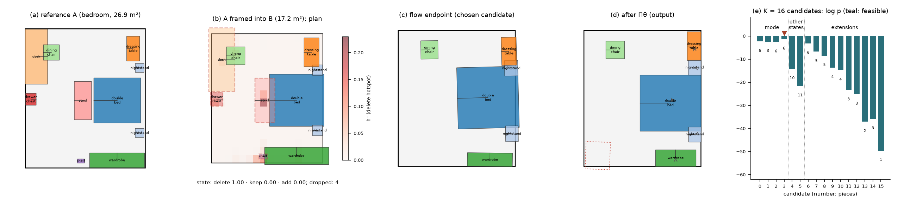
IntentFlow treats reference-to-room arrangement transfer as discrete set editing and continuous generative transport, followed by a constrained feasibility projection (Fig. 2). Rather than relying on end-to-end regression to satisfy non-convex boundary conditions, we divide the labour: one transformer trunk learns designers' set edits and the continuous transport, and physical validity is enforced by an augmented Lagrangian projection \(\Pi_\theta\). Table 1 lists which decision is learned and which is a rule.
Problem definition. A furnished reference room \(A=\{(c_i,s_i,p_i,\theta_i,k_i)\}_{i=1}^N\) comprises \(N\) pieces, where \(c_i\) is the category, \(s_i\in\mathbb R^3_{>0}\) the bounding-box size, \(p_i\in\mathbb R^2\) the floor position, \(\theta_i\in[-\pi,\pi)\) the yaw and \(k_i\) a 3D-FUTURE asset [24]. The target room \(B\) is a polygon \(P_B\) with its door and window segments; each door has a clearance box in \(\mathcal D\). Given an optional target style and a degree of change \(\lambda\in[0,1]\), the system produces a layout \(\{(c'_j,s'_j,p'_j,\theta'_j,k'_j)\}_{j=1}^{N'}\) in \(P_B\) (\(N'\neq N\) in general) that preserves the functional groupings, orientations and wall relations of \(A\) under physical constraints.
Continuous relational descriptor. Instead of a discrete relation graph, which is brittle under non-rigid scaling, the relation of an ordered pair \((u,v)\) is a continuous descriptor \(\phi_{uv}\in\mathbb R^6\): the offset \(\Delta_{uv}=p_v-p_u\) along \(u\)'s unit right and front vectors \(\mathbf r_u,\mathbf f_u\), the cosine and sine of the relative yaw, the gap between the two footprint polygons, and the centre distance \(\lVert\Delta_{uv}\rVert\).
Arrangement distance \(D\). The distortion of a pair's relation is
$$\begin{aligned}\phi_{uv}&=\big(\Delta_{uv}\!\cdot\!\mathbf r_u,\ \Delta_{uv}\!\cdot\!\mathbf f_u,\ \cos(\theta_v-\theta_u),\ \sin(\theta_v-\theta_u),\ \mathrm{gap}(u,v),\ \lVert\Delta_{uv}\rVert\big),\\ d(\phi,\phi')&=\tfrac{1}{3.5}\Big[\tfrac{1-\cos\angle(\phi_{1:2},\phi'_{1:2})}{2}+\tfrac{1-(\phi_3\phi'_3+\phi_4\phi'_4)}{2}+\min\!\Big(\tfrac{|\log(\phi'_6/\phi_6)|}{\log 3},1\Big)+\tfrac12\big[\,[\phi_5<0.05]\neq[\phi'_5<0.05]\,\big]\Big]\in[0,1]\end{aligned}\tag{1}$$penalizing the bearing error, the relative-orientation drift, the warp of their distance (log-scaled, saturating at 3×), and a contact torn or created (gap below 5 cm). Over all ordered pairs \(\mathcal E\) of pieces present in both layouts,
$$D(S,S')=\frac{1}{|\mathcal E|}\sum_{(u,v)\in\mathcal E}d\big(\phi_{uv},\phi'_{uv}\big),\tag{2}$$\(D\) is an evaluation measure, not a training loss; with the threshold 0.15 it also selects the pairs whose placement is supervised (§4).
Geometric framing. Rather than starting from Gaussian noise, IntentFlow starts from an informative, geometry-aligned source. Reference positions, walls and openings are carried into the target's frame by an area-matching similarity about the room centroids \(c_A, c_B\):
$$\tilde p_i=c_B+\sqrt{|B|/|A|}\,\big(p_i-c_A\big),\qquad \tilde s_i=s_i,\qquad \tilde\theta_i=\theta_i,\tag{3}$$so that the identity transport keeps the reference layout and the transport is short where the room changes little.
Tokens and relational attention. The trunk reads one token sequence: 24 reference slots and 8 added slots, the reference's pieces, the wall segments and openings of both rooms (up to 24 walls and 8 openings per room) and a condition token (the target's room type and the relation distance asked for, 0 at inference). A slot encodes existence, category, log size, elevation, position and yaw \((\cos\theta,\sin\theta)\), with a 7×7 view of the floor around it; a reference slot also carries its reference piece's token (category, size, framed pose, appearance vector) and an added slot its anchor's. The reference's pairwise geometry enters every attention head as a bias [12]: \(\operatorname{softmax}(QK^\top/\sqrt{d_k}+B^{(h)})\), \(B^{(h)}_{ij}=\mathrm{MLP}(e_{ij})_h\), where \(e_{ij}\) holds the relative offset, yaw difference and distance of two reference pieces. The trunk has 8 pre-norm transformer blocks [25] (width 256, 8 heads, 8,242,339 parameters).
Rectified flow. Placement is a rectified flow [2] [23] from the framed reference \(x_0\) to the designer's layout \(x_1\), with a stochastic-interpolant noise term [26] (\(\eta=1\)):
$$\begin{gathered}x_t=(1-t)\,x_0+t\,x_1+\eta\sin^2(\pi t)\,\varepsilon,\qquad u_t=x_1-x_0+\eta\,\pi\sin(2\pi t)\,\varepsilon,\qquad \varepsilon\sim\mathcal N(0,I),\\ \mathcal L_\text{FM}=\mathbb E_{t,(A,B),\varepsilon}\Big[\big\lVert v_\vartheta(x_t,t\mid A,B)-u_t\big\rVert^2_{\text{exist, category}}+\big\lVert v_\vartheta(x_t,t\mid A,B)-u_t\big\rVert^2_{\text{box}}\Big],\end{gathered}\tag{4}$$In training, \(x_0\) is perturbed by scene-level noise (\(\sigma_p\sim|\mathcal N(0,0.15)|\), \(\sigma_\theta\sim|\mathcal N(0,\pi/4)|\)), so that the flow learns to repair a displaced layout; sampling integrates 100 Euler steps over \(t\in[0,1]\) from the framed reference itself. Added pieces start from a pose bank of 79,939 training configurations over 816 (category, anchor) pairs, i.e. from how designers place such a piece next to such an anchor.
Learned edit heads. When the target's capacity differs from the reference's, the discrete inventory is adapted before the continuous placement. Read on the framed reference, three heads govern the adaptation:
Supervision. Real room pairs carry no edit traces, so the policy is supervised on random intermediate states \(S_k\) between \(A\)'s set and \(B\)'s (each of the designer's edits already applied with probability \(u\sim U(0,1)\)); \(\mathcal A(S_k)\) are the edits allowed there, \(\mathcal R(S_k)\) the designer's remaining edits, \(q^\pm_g\) the shares of added and given-up pieces in cell \(g\):
$$\begin{gathered}\mathcal L_\text{state}=-\log p\big(\sigma^\ast\big),\qquad \sigma^\ast=\operatorname{sign}(n_B-n_A)+1\in\{\text{delete},\text{keep},\text{add}\},\\ \mathcal L_\text{hot}=-\sum_{g}\big(q^+_g\log h^+_g+q^-_g\log h^-_g\big),\\ \mathcal L_\text{act}=\log\!\sum_{e\in\mathcal A(S_k)}e^{\ell(e)}-\log\!\!\sum_{e\in\mathcal R(S_k)\cup\{\text{stop}\,:\,\mathcal R=\emptyset\}}\!\!e^{\ell(e)}\;-\;\log p\big(\text{anchor}^\ast\mid c\big),\end{gathered}\tag{5}$$Constrained decoding over edit plans. Instead of a capacity threshold, adaptation is decoded under constraints. The state restricts the edits (delete: drops and category changes; keep: none; add: additions), the delete hotspot raises a drop's logit at the piece's position, and the add hotspot scores an addition's cell. Each of \(K=16\) candidate plans — the most probable plan placed four times, the plans of the other two states, and the most probable plan carried on by further edits — is placed by the flow and projected, and
$$\begin{gathered}\log p(\pi)=\log p(\sigma)+\sum_{k}\log p\big(e_k\mid e_{\lt k},\sigma,A,B\big)+\sum_{j\in\text{added}}\log h^+\big(g(p_j)\big),\\ \ell(\text{drop}\ i)\mathrel{+}=\log h^-\big(g(\tilde p_i)\big),\\ \pi^\ast=\arg\max_{\pi\in\Pi_K}\big(\,[\,\mathrm{viol}(\Pi_\theta(x_1^\pi))\le 2\,\text{cm}\,],\ \log p(\pi),\ -\overline{\lVert\Pi_\theta(x_1^\pi)-x_1^\pi\rVert}\,\big)\quad\text{(lexicographic)}\end{gathered}\tag{6}$$keeps the most probable plan whose projection leaves a residual of at most 2 cm, and among equally probable ones the one \(\Pi_\theta\) moved least.
Table 1. Division of labour in the inference path: what is learned, what is a rule, and where every constant comes from (read from the code).
| decision | made by | constants and their source |
|---|---|---|
| room state; where to delete / add | learned: state head, hotspots \(h^-, h^+\) (Eq. 5) | 16×16 grid on the target |
| which piece to drop, change or add; its anchor; when to stop | learned: next-action and anchor heads (Eqs. 5, 6) | category changes within the 3D-FUTURE super-category; at most 12 edits |
| where pieces go | learned: velocity head, 100 Euler steps (Eq. 4); added pieces from the training pose bank | source as the framed reference (Eq. 3) |
| keep the asset; appearance | learned: same-asset and style heads (Eq. 8) | retrieval weights \(n_a, n_s\): mean squared distances over random asset pairs |
| how many pieces go | search over 16 plans (Eq. 6) | most probable plan with residual ≤ 2 cm (feasibility tolerance) |
| no interpenetration | \(\Pi_\theta\): mesh cross-sections (Eq. 7) | 17 heights 0.05–2.45 m; zero penetration |
| top-view overlap | \(\Pi_\theta\) | 90th percentile per category pair in training rooms (91 pairs above 1 cm) |
| inside the room; door clearance | \(\Pi_\theta\) | door box of the door-blocked metric (door width ≥ 0.8 m, 0.9 m deep) |
| reachability | \(\Pi_\theta\), PhyScene's walkable raster [6] | robot-width squares on paths to every door and free region; ≤ 4 rounds |
| orientation | reference (kept); maximum a posteriori under the data prior and the measured flow noise (added) | 6°: emptiest 1° bin of real deviations from square |
| touching groups | reference offsets to the group's largest piece | contact 5 cm (the contact of \(D\)) |
| wall contact of groups | rigid group shift | 90th percentile of real wall gaps per category; contact 0.15 m (wall-kept metric) |
The flow's endpoint shows small interpenetrations and pieces through walls, because a network meets non-convex boundary conditions only up to its error. \(\Pi_\theta\) maps the generated positions \(\hat p\) onto the non-convex feasible set:
$$\begin{aligned}\Pi_\theta(\hat x)=\arg\min_{p}\ &\sum_i\lVert p_i-\hat p_i\rVert^2\\ \text{s.t.}\ &\mathrm{pen}\big(M_i^h,M_j^h\big)\le0\ \ \forall h,\qquad \mathrm{pen}\big(F_i,F_j\big)\le\tau_{c_ic_j},\qquad \text{corners}(F_i)\subset P_B,\\ &\mathrm{pen}(F_i,b)\le0\ \ (b\in\mathcal D\cup\mathcal Q,\ z_i<1\,\text{m}),\end{aligned}\tag{7}$$Feasibility is judged by penetration and containment; door boxes and path squares are pursued by the same optimisation but do not decide it.
Restoring what the reference prescribes. Before the solve, three closed-form steps restore the reference's own geometry:
The solver runs Adam [27] (100 steps per round, at most 25 rounds, \(\rho_0=10\) doubling, stop below 1 cm). For the runtime of §5.5 the 16 candidates are solved as one batch on the GPU, the inner steps captured as a CUDA graph; the evaluation runs used the same solver on CPU workers.
The arrangement is carried by footprints and poses, not by particular meshes. The style label never enters the transformer trunk; assets are chosen by a separate style head:
$$a_i=a_i^{\text{own}}+\lambda\,\big(a_i^{\text{style}}-a_i^{\text{own}}\big),\qquad k_i=\arg\min_{k\in\mathrm{cat}(c_i)}\frac{\lVert E_k-a_i\rVert^2}{n_a}+\frac{\lVert\log \bar s_k-\log s_i\rVert^2}{n_s},\tag{8}$$where \(E_k\) is a pre-trained asset embedding combining room co-occurrence (PPMI [28]), CLIP image features [29] and a supervised contrastive style term [30], and \(n_a, n_s\) normalise the two terms by their mean over random asset pairs. Because the flow and \(\Pi_\theta\) act on footprints, changing the style across \(\lambda\in[0,1]\) moves the arrangement by \(D\le0.034\) (§5.4).
Base corpus. We use 3D-FRONT [1] scenes with 3D-FUTURE assets [24], with 3 to 24 pieces after removing ceiling and pendant lamps and no piece more than 20% outside the room. The corpus is split by house into training (80%), validation (10%) and test (10%), and training rooms whose design reappears in the validation or test split are removed. Mislabeled categories are corrected (footstools labelled double bed, bookcases labelled wardrobe).
Room pairs. Pairs of rooms that share furniture give 68,958 training pairs (293 validation) of four kinds:
Pieces are matched within category families by footprint size with the Hungarian algorithm [31]. The flow loss is applied to pairs whose arrangement the designer kept (\(D<0.15\)) and to the added pieces of every pair, and rows are reweighted across area-ratio bins (0.7, 0.9, 1.1, 1.44, 2.0).
Masked room completion. 70% of the self pairs become completion rows: 1–30% of the pieces (at most 8) are masked from \(A\) and become \(B\)'s added pieces at their own poses [22].
The trunk and all heads are trained jointly, all losses summed with unit weight, with AdamW [32] (weight decay 0.01, gradient clipping at 1) and a one-cycle schedule [33], in bf16 mixed precision on 2 x NVIDIA L4 (DDP) (batch 128 per GPU). Training proceeds in stages, each initialised from the previous one (Appendix A, Table 10); the final stage runs 12,000 steps at a peak learning rate of 5e-5, and the checkpoint is selected by validation flow loss.
Benchmarks. All evaluations use a benchmark frozen from the house-disjoint test split of 3D-FRONT [1] with fixed selection rules and stored with SHA-256 manifests:
Metrics. Relational transfer: kept (share of reference pieces kept), rel. kept (of the reference's floor pairs within 0.3 m, the share still within 0.3 m with the relative yaw within 20° and the side within 45°), \(D\) (Eq. 2), iRecall (realised relation triplets) and wall kept (reference wall contacts within 0.15 m kept). Physical plausibility: torn (touching pairs pulled more than 0.3 m apart), out (pieces more than 5% outside the room), collide (footprints overlapping by more than 2% of the smaller, nesting included) and door blocked (door boxes more than 5% covered). Realism against real test rooms follows PhyScene [6]: FID [34] and KID [35] of top-down renders (clean-fid [36]), scene classification accuracy (SCA), and walkable / reachable shares. Significance: paired bootstrap over reference rooms [37] (10,000 resamples).
Baselines. Released models of LEGO-Net [4] (given the reference at its affine transplant poses), PhyScene [6] (diffusion with physics guidance, given the target room only) and MiDiffusion [5] (mixed discrete-continuous diffusion given the reference's object labels). Two non-learning references: the affine transplant (the reference mapped between the rooms' rectangles) and an energy optimisation of the transplant for a smooth form of \(D\) with the reference's wall sides as constraints.
Table 2. The frozen test split (700 targets): means over the 350 scale targets (0.7×–1.3×) and the 350 shape targets (seven outlines). Bold green: best of the compared methods; grey: references. Paired bootstrap tests (Table 3): IntentFlow is better than every baseline on every metric of Table 3 (all p<0.001).
| method | kept | rel. kept ↑ | \(D\) ↓ | wall kept ↑ | torn ↓ | out ↓ | collide ↓ | door blocked ↓ |
|---|---|---|---|---|---|---|---|---|
| scale test (350 targets) | ||||||||
| LEGO-Net | 1.00 | 0.60 | 0.160 | 0.53 | 0.092 | 0.165 | 0.228 | 0.281 |
| PhyScene | 0.31 | 0.13 | 0.356 | 0.56 | 0.268 | 0.116 | 0.189 | 0.540 |
| MiDiffusion | 0.91 | 0.31 | 0.290 | 0.75 | 0.137 | 0.132 | 0.147 | 0.425 |
| IntentFlow (ours) | 0.86 | 0.76 | 0.065 | 0.92 | 0.061 | 0.003 | 0.084 | 0.015 |
| Affine transplant | 1.00 | 0.80 | 0.058 | 0.88 | 0.043 | 0.164 | 0.124 | 0.323 |
| Energy optimisation | 1.00 | 0.77 | 0.051 | 0.99 | 0.058 | 0.057 | 0.120 | 0.174 |
| shape test (350 targets) | ||||||||
| LEGO-Net | 1.00 | 0.42 | 0.137 | 0.38 | 0.266 | 0.094 | 0.148 | 0.181 |
| PhyScene | 0.36 | 0.17 | 0.340 | 0.49 | 0.399 | 0.100 | 0.126 | 0.531 |
| MiDiffusion | 0.91 | 0.22 | 0.309 | 0.59 | 0.277 | 0.099 | 0.099 | 0.319 |
| IntentFlow (ours) | 0.97 | 0.63 | 0.052 | 0.89 | 0.067 | 0.002 | 0.055 | 0.005 |
| Affine transplant | 1.00 | 0.40 | 0.076 | 0.75 | 0.265 | 0.130 | 0.033 | 0.276 |
| Energy optimisation | 1.00 | 0.66 | 0.048 | 0.98 | 0.135 | 0.008 | 0.078 | 0.110 |
Table 3. IntentFlow minus each baseline over all 700 targets: mean paired difference [95% interval], \(p\) (bootstrap over reference rooms); below, the two means and the number of targets where both are defined.
| metric | vs. LEGO-Net | vs. PhyScene | vs. MiDiffusion |
|---|---|---|---|
| rel. kept ↑ | +0.186 [+0.102, +0.268], p<0.001 0.692 vs. 0.506, n=686 | +0.521 [+0.433, +0.602], p<0.001 0.676 vs. 0.155, n=264 | +0.440 [+0.373, +0.504], p<0.001 0.700 vs. 0.260, n=672 |
| \(D\) ↓ | −0.090 [−0.106, −0.076], p<0.001 0.058 vs. 0.149, n=697 | −0.289 [−0.310, −0.268], p<0.001 0.057 vs. 0.346, n=378 | −0.242 [−0.261, −0.222], p<0.001 0.058 vs. 0.300, n=697 |
| torn ↓ | −0.120 [−0.197, −0.048], p<0.001 0.063 vs. 0.183, n=524 | −0.257 [−0.377, −0.145], p<0.001 0.076 vs. 0.333, n=182 | −0.142 [−0.210, −0.079], p<0.001 0.066 vs. 0.208, n=500 |
| wall kept ↑ | +0.448 [+0.393, +0.503], p<0.001 0.900 vs. 0.452, n=652 | +0.371 [+0.315, +0.424], p<0.001 0.896 vs. 0.525, n=471 | +0.234 [+0.165, +0.307], p<0.001 0.900 vs. 0.666, n=652 |
| out ↓ | −0.127 [−0.152, −0.105], p<0.001 0.002 vs. 0.130, n=700 | −0.105 [−0.121, −0.090], p<0.001 0.002 vs. 0.108, n=700 | −0.113 [−0.133, −0.093], p<0.001 0.002 vs. 0.115, n=700 |
| collide ↓ | −0.118 [−0.139, −0.097], p<0.001 0.070 vs. 0.188, n=700 | −0.088 [−0.105, −0.071], p<0.001 0.070 vs. 0.158, n=700 | −0.054 [−0.068, −0.039], p<0.001 0.070 vs. 0.123, n=700 |
Relational design preservation. IntentFlow keeps 0.69 of the reference's close relations at a relation distance of \(D=0.059\), against 0.51 / 0.149 for LEGO-Net, 0.26 / 0.300 for MiDiffusion and 0.15 / 0.348 for PhyScene (Table 2; relations kept +0.186 [+0.102, +0.268], p<0.001 against LEGO-Net, Table 3). It keeps 0.90 of the reference's wall contacts (baselines 0.45–0.67) and tears 0.064 of its touching pairs (LEGO-Net 0.179, PhyScene 0.334). The generative baselines score lower because they synthesize their own layouts rather than transferring the reference's.
Architectural and physical feasibility. LEGO-Net, MiDiffusion and PhyScene leave 13.0%, 11.5% and 10.8% of the pieces outside the room. With \(\Pi_\theta\), IntentFlow leaves 0.2% outside and blocks 0.010 of the doors (baselines 0.231–0.536).
Table 4. Downsizing: the three smallest scales. Methods that keep every piece push pieces out of the room or into each other; IntentFlow gives pieces up instead.
| method | 0.7× | 0.8× | 0.9× | ||||||
|---|---|---|---|---|---|---|---|---|---|
| kept | out ↓ | collide ↓ | kept | out ↓ | collide ↓ | kept | out ↓ | collide ↓ | |
| IntentFlow (ours) | 0.63 | 0.000 | 0.118 | 0.72 | 0.007 | 0.102 | 0.76 | 0.002 | 0.139 |
| LEGO-Net | 1.00 | 0.506 | 0.323 | 1.00 | 0.362 | 0.305 | 1.00 | 0.142 | 0.266 |
| PhyScene | 0.21 | 0.235 | 0.323 | 0.28 | 0.159 | 0.275 | 0.30 | 0.096 | 0.211 |
| MiDiffusion | 0.91 | 0.381 | 0.294 | 0.91 | 0.218 | 0.224 | 0.91 | 0.100 | 0.147 |
| Affine transplant | 1.00 | 0.521 | 0.279 | 1.00 | 0.447 | 0.211 | 1.00 | 0.138 | 0.159 |
| Energy optimisation | 1.00 | 0.291 | 0.230 | 1.00 | 0.066 | 0.150 | 1.00 | 0.026 | 0.108 |
Downsizing. When the room shrinks to 0.7×, methods that keep every piece violate the boundary: LEGO-Net leaves 50.6% of the pieces outside, and the energy optimisation 29.1%. IntentFlow's constrained decoding chooses which pieces to give up, keeping 0.63 of them with 0.0% outside (Table 4).
Table 5. Realism of the standard-test outputs (all 700 targets) against the real rooms of the test split, PhyScene's metrics. Out: share of layouts with any piece more than 5% outside.
| method | FID ↓ | KID×10³ ↓ | SCA → 0.5 | collide ↓ | out ↓ | walkable ↑ | reachable ↑ |
|---|---|---|---|---|---|---|---|
| IntentFlow (ours) | 15.6 | 5.12 | 0.785 | 0.383 | 0.013 | 0.967 | 0.957 |
| LEGO-Net | 23.6 | 11.75 | 0.916 | 0.657 | 0.414 | 0.927 | 0.873 |
| PhyScene | 18.5 | 10.17 | 0.854 | 0.598 | 0.493 | 0.948 | 0.917 |
| MiDiffusion | 17.1 | 5.52 | 0.804 | 0.453 | 0.396 | 0.953 | 0.936 |
| Affine transplant | 17.1 | 4.90 | 0.814 | 0.315 | 0.443 | 0.955 | 0.920 |
| Energy optimisation | 16.1 | 3.77 | 0.818 | 0.423 | 0.127 | 0.918 | 0.902 |
| Real rooms of the split | — | — | — | 0.480 | 0.444 | 0.945 | 0.913 |
Realism. Among the compared methods, IntentFlow's layouts are closest to the real rooms by FID (15.6), KID (5.12) and SCA (0.785) and have the highest walkable / reachable shares (0.967 / 0.957; Table 5). The two references, which keep the reference's furniture and arrangement, reach a lower KID but leave far more layouts with a piece outside.
Table 6. Real designer pairs (285): layouts transferred into \(B\) compared with the designers' rooms \(B\). CKL: category KL divergence.
| method | FID ↓ | KID×10³ ↓ | SCA → 0.5 | CKL×10² ↓ | collide ↓ | out ↓ | walkable ↑ | reachable ↑ |
|---|---|---|---|---|---|---|---|---|
| IntentFlow (ours) | 16.1 | 2.32 | 0.668 | 8.2 | 0.438 | 0.007 | 0.907 | 0.887 |
| IntentFlow, flow output before \(\Pi_\theta\) | 27.5 | 11.52 | 0.826 | 8.1 | 0.582 | 0.473 | 0.929 | 0.826 |
| MiDiffusion | 15.0 | 1.15 | 0.618 | 214.7 | 0.570 | 0.139 | 0.940 | 0.882 |
| PhyScene | 27.9 | 11.30 | 0.839 | 518.8 | 0.639 | 0.169 | 0.942 | 0.868 |
| Designer layouts | — | — | — | — | 0.458 | 0.061 | 0.949 | 0.863 |
Real designer pairs. The designer of \(B\) arranged the room independently of \(A\). MiDiffusion, which generates its own arrangement from the reference's object list, is closer to the designers' rooms in visual statistics (FID 15.0 against 16.1; also KID and SCA), but it discards the reference's arrangement, its category distribution diverges (CKL×10² 214.7 against 8.2), and 13.9% of its layouts have a piece through a wall (IntentFlow 0.7%). IntentFlow keeps the transfer intent at FID 16.1 with the highest reachable share (0.887; Table 6).
Fig. 1 shows the median-\(D\) target per room type, Fig. 4 the standard tests in 3D, Figs. 5–7 all methods on random rows of each kind of target, and Fig. 8 masked completion.
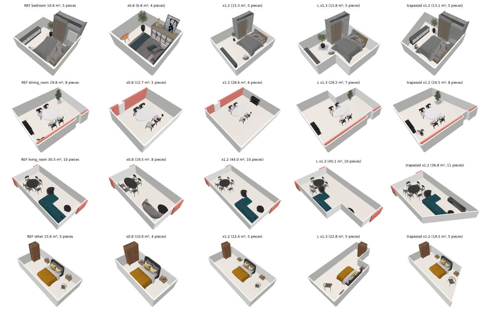
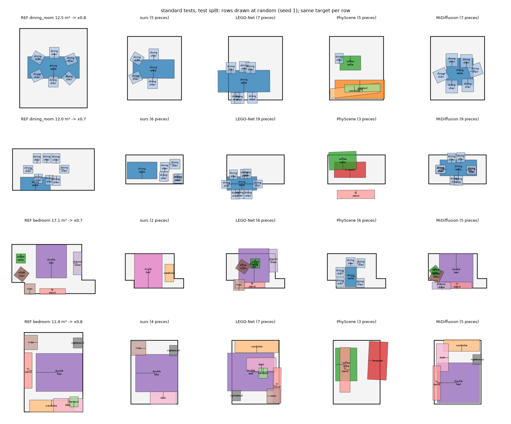
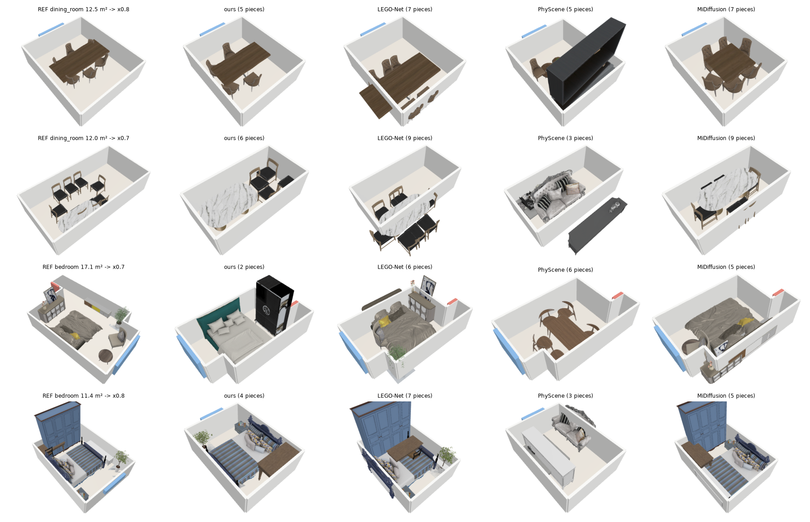
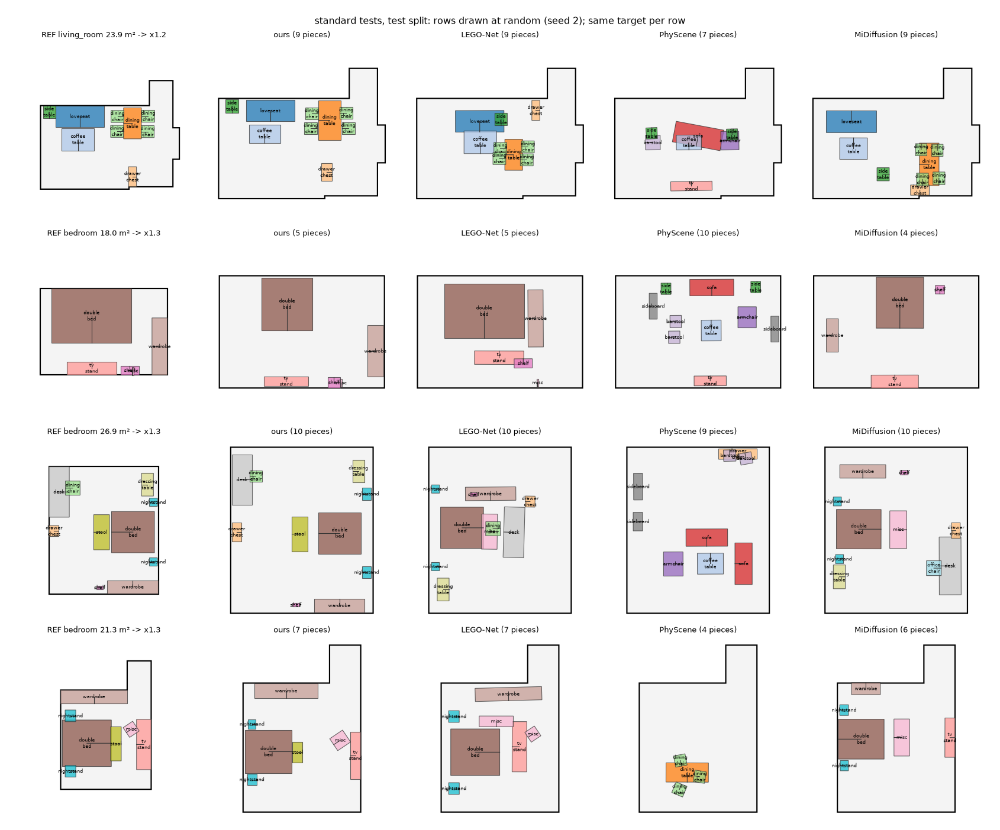
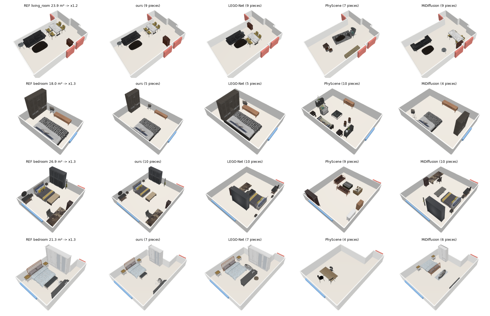
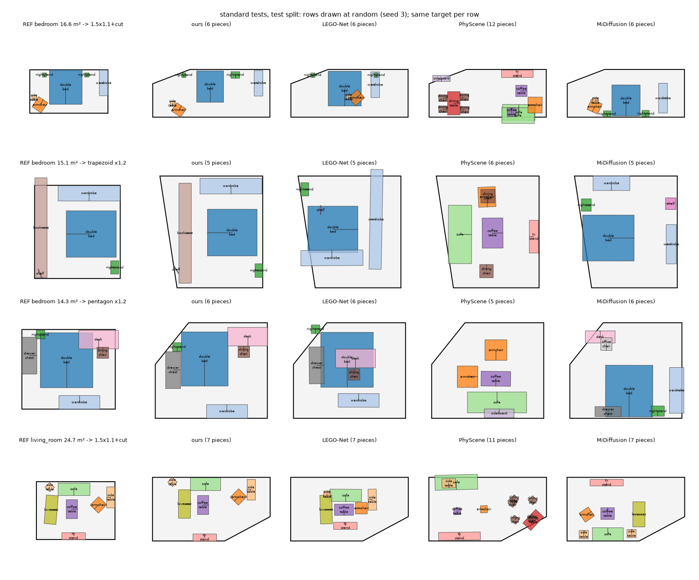
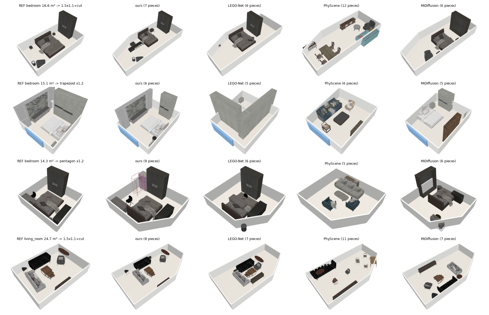
Table 7. Masked completion: one floor piece removed from each of 200 real test rooms, the room itself the target.
| model | adds a piece | right category added ↑ | first addition right ↑ | position error (m) ↓ | rest kept ↑ | collide ↓ |
|---|---|---|---|---|---|---|
| IntentFlow (ours) | 0.51 | 0.33 | 0.31 | 0.82 | 0.98 | 0.063 |
| earlier model trained without masked rooms (r5) | 0.00 | 0.00 | 0.00 | — | 1.00 | 0.080 |
| most frequent category of the room type | — | 0.24 | 0.24 | — | — | — |
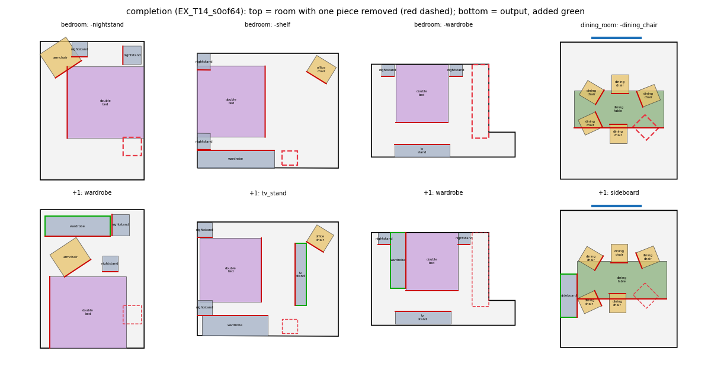
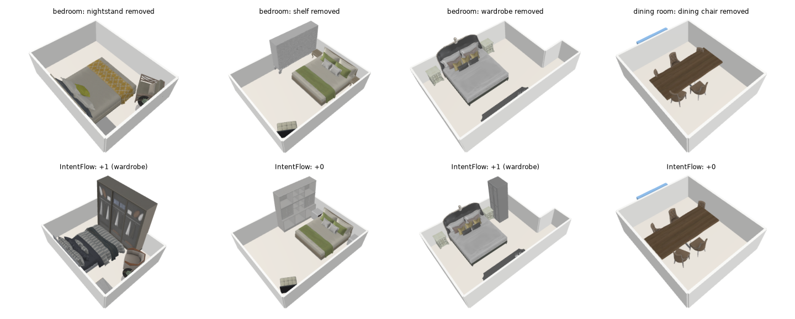
Table 8. Style test (50 rooms, each its own target): pieces changed, carrying the target style's label, keeping the reference's style label, and \(D\) to the reference, per \(\lambda\). Run with the previous orientation rule.
| \(\lambda\) | Japanese: changed | Japanese: in style | Light Luxury: changed | Light Luxury: in style | New Chinese: changed | New Chinese: in style | same style as reference ↑ | \(D\) ↓ |
|---|---|---|---|---|---|---|---|---|
| 0.00 | 0.13 | 0.16 | 0.13 | 0.05 | 0.13 | 0.03 | 0.95 | 0.033 |
| 0.25 | 0.15 | 0.16 | 0.18 | 0.05 | 0.17 | 0.05 | 0.94 | 0.029 |
| 0.50 | 0.16 | 0.18 | 0.22 | 0.11 | 0.23 | 0.12 | 0.89 | 0.029 |
| 0.75 | 0.25 | 0.29 | 0.46 | 0.40 | 0.50 | 0.46 | 0.66 | 0.032 |
| 1.00 | 0.39 | 0.45 | 0.65 | 0.60 | 0.59 | 0.56 | 0.51 | 0.032 |
At \(\lambda=0\), 0.955 of the pieces keep the reference's style; at \(\lambda=1\), 0.45–0.60 carry the target style, while \(D\) stays between 0.027 and 0.034 (Table 8, Figs. 9, 10).
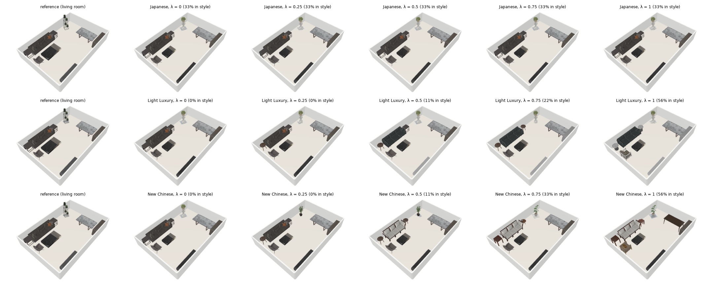
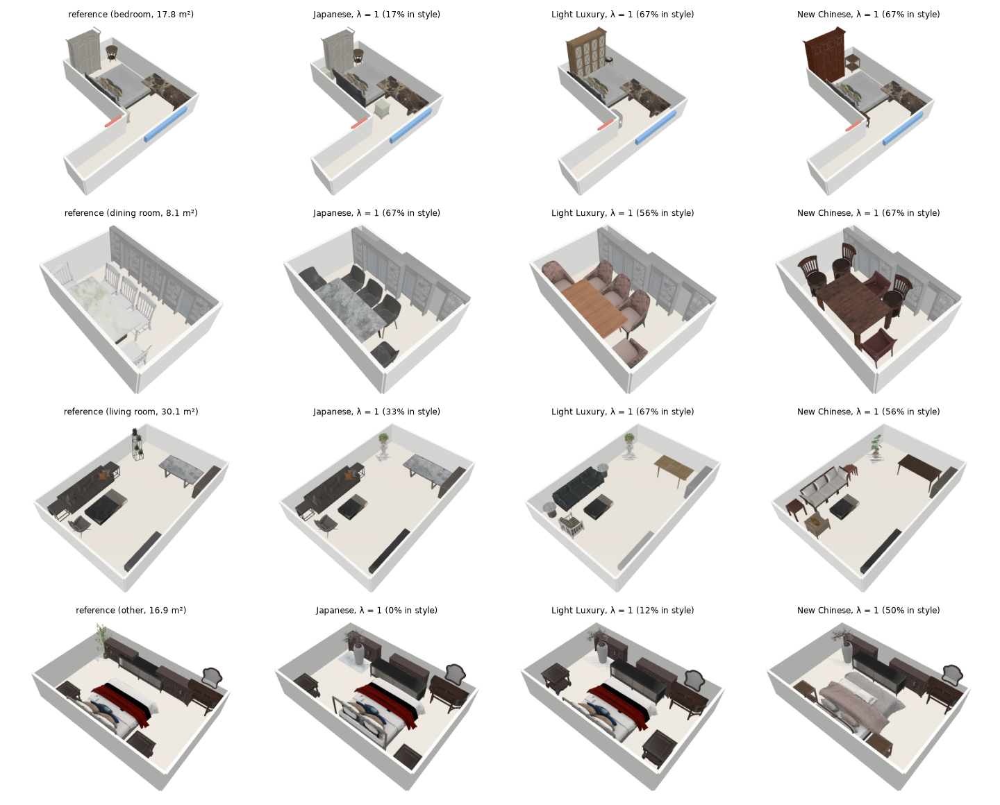
Table 9. Components added one at a time, validation split (scale and shape tests: 10 references × 7 targets each; completion: 200 rooms). "Extra bed": outputs with more beds than the reference. "—": not measured in that run.
| variant | change against the row above | 0.7× kept | 0.7× collide ↓ | feasible ↑ | rel. kept ↑ | \(D\) ↓ | extra bed ↓ | door blocked ↓ | wall kept ↑ | torn ↓ | completion: right category ↑ | completion: position error (m, median) ↓ |
|---|---|---|---|---|---|---|---|---|---|---|---|---|
| A | added pieces start from Gaussian noise; decided category given to the flow; K = 8 (4 most probable + 4 drawn) | 0.75 | 0.402 | — | 0.832 | 0.071 | — | 0.183 | 0.732 | 0.141 | 0.430 | 1.19 |
| B | added pieces start from a training pose of their (category, anchor) pair | 0.75 | 0.355 | — | 0.779 | 0.071 | — | 0.195 | 0.716 | 0.148 | 0.420 | 0.71 |
| C | B, re-run with feasibility recorded (mesh physics only) | 0.75 | 0.355 | 0.957 | 0.779 | 0.071 | 0.029 | 0.250 | 0.788 | 0.157 | — | — |
| D | + footprint tolerances from real rooms in the projection | 0.75 | 0.328 | 0.943 | 0.772 | 0.074 | 0.029 | 0.250 | 0.791 | 0.159 | — | — |
| E | + state head and hotspot maps (K = 8) | 0.75 | 0.233 | 0.979 | 0.782 | 0.073 | 0.100 | 0.085 | 0.723 | 0.187 | 0.285 | 0.54 |
| F | + K = 16 with extended edit sequences | 0.60 | 0.160 | 1.000 | 0.788 | 0.072 | 0.100 | 0.085 | 0.715 | 0.188 | — | — |
| G | + category changes within the super-category | 0.60 | 0.160 | 1.000 | 0.824 | 0.067 | 0.000 | 0.085 | 0.717 | 0.170 | 0.285 | 0.55 |
| H | + area-ratio balanced training rows | 0.75 | 0.158 | 1.000 | 0.796 | 0.070 | 0.000 | 0.122 | 0.717 | 0.157 | 0.305 | 0.46 |
| I | H re-run, projection as in H (mesh physics + footprint tolerances) | 0.77 | 0.151 | 1.000 | 0.799 | 0.070 | 0.000 | 0.179 | 0.806 | 0.142 | — | — |
| J | + door clearance boxes, reachability path squares, square snap within the data tolerance (6°) | 0.69 | 0.114 | 1.000 | 0.792 | 0.070 | 0.000 | 0.000 | 0.664 | 0.177 | — | — |
| K | J + wall contact of the reference's wall-backed pieces (not kept: tears groups) | 0.65 | 0.144 | 1.000 | 0.756 | 0.072 | 0.000 | 0.000 | 0.985 | 0.247 | — | — |
Inference latency. On an NVIDIA GeForce RTX 3090, a target takes 6.51 s median (11.20 s at the 90th percentile; 126 test targets): 1.63 s for the transformer readings and the flow, 3.95 s for the batched projection of all 16 candidates, and 1.26 s for the reachability rounds.
We have presented IntentFlow for reference-to-room arrangement transfer, which unifies discrete set editing, continuous rectified-flow transport and a constrained geometric projection. Trained on 68,958 pairs of real 3D-FRONT rooms, with the non-convex physical constraints delegated to an augmented Lagrangian solver, IntentFlow preserves the reference's arrangement better than existing baselines (\(D=0.059\) against 0.149–0.348), leaves 0.2% of its pieces outside the room, has the highest walkable share of the compared methods, and runs in 6.5 s per target (median).
| component | setting |
|---|---|
| corpus | 3D-FRONT [1], 3–24 pieces after removing ceiling and pendant lamps, none more than 20% outside; house-disjoint split 80 / 10 / 10%; assets 3D-FUTURE [24] |
| network | transformer, 8 layers, width 256, 8 heads, feed-forward 1024, pre-norm, GELU; 8,242,339 parameters |
| slots and tokens | 24 reference + 8 added slots (79-d: existence, 38 categories, log size, elevation, position, cos / sin yaw, 32-d appearance); up to 24 wall segments and 8 openings per room; condition token with the room type and the relation distance asked for |
| flow | source noise \(\sigma_p\sim|\mathcal N(0,0.15)|\), \(\sigma_\theta\sim|\mathcal N(0,\pi/4)|\) per scene (training); interpolant noise \(\eta=1\); 100 Euler steps |
| plan | 16×16 hotspot grid; at most 12 edits; at most 8 added pieces; 16 candidates (4 with the most probable plan) |
| projection | augmented Lagrangian, \(\rho_0=10\) doubling, 25 rounds × 100 Adam steps (lr 0.02), stop at 1 cm; feasibility 2 cm; 17 mesh heights; reachability ≤ 4 rounds |
| training | AdamW (weight decay 0.01), one-cycle schedule, gradient clip 1, batch 128 per GPU, bf16 autocast, 2 x NVIDIA L4 (DDP); masked rooms with probability 0.7 (1–30% of the pieces, ≤ 8); half of each batch from pairs with \(D<0.15\); area-ratio balanced |
| pose bank | 79,939 training poses over 816 (category, anchor category) pairs |
| environment | training on 2 x NVIDIA L4 (DDP); evaluation runs: the network on an NVIDIA GeForce RTX 3090, the projections in forked CPU workers (AMD EPYC 7551P); runtime (§5.5): network and projection on the RTX 3090 |
Table 10. Training stages of the shown model, each initialised from the previous one.
| stage | added in this stage | steps | learning rate |
|---|---|---|---|
| q4 | masked rooms with probability 0.7 (from the masked-completion model q3) | 30,000 | 5e-5 |
| q8 | decided existence and category given to the flow (known additions) | 20,000 | 5e-5 |
| q12 | added pieces start from the training pose bank | 20,000 | 5e-5 |
| q14 | state head and delete / add hotspots | 8,000 | 2e-4 |
| q15 (final) | area-ratio balanced rows; category changes within the super-category (inference) | 12,000 | 5e-5 |
Table 11. IntentFlow minus each method per test: mean paired difference [95% interval], \(p\) (bootstrap over reference rooms, 10,000 resamples). Means are over the targets on which both methods define the metric (PhyScene's \(D\) needs matched pieces, torn pairs need touching pairs), so they can differ from the table means.
| test / metric | vs. LEGO-Net | vs. PhyScene | vs. MiDiffusion | vs. Affine transplant |
|---|---|---|---|---|
| scale test | ||||
| rel. kept | +0.154 [+0.079, +0.237], p<0.001 | +0.589 [+0.506, +0.675], p<0.001 | +0.453 [+0.383, +0.521], p<0.001 | −0.042 [−0.077, −0.009], p=0.011 |
| \(D\) | −0.096 [−0.115, −0.078], p<0.001 | −0.288 [−0.315, −0.263], p<0.001 | −0.226 [−0.251, −0.200], p<0.001 | +0.007 [+0.000, +0.014], p=0.047 |
| torn | −0.037 [−0.100, +0.023], p=0.235 | −0.168 [−0.301, −0.044], p=0.006 | −0.072 [−0.131, −0.018], p=0.005 | +0.010 [−0.027, +0.050], p=0.643 |
| wall kept | +0.396 [+0.338, +0.454], p<0.001 | +0.354 [+0.286, +0.416], p<0.001 | +0.168 [+0.102, +0.240], p<0.001 | +0.037 [−0.001, +0.078], p=0.059 |
| iRecall | +0.085 [+0.051, +0.121], p<0.001 | +0.265 [+0.216, +0.312], p<0.001 | +0.185 [+0.150, +0.222], p<0.001 | −0.044 [−0.060, −0.028], p<0.001 |
| out | −0.162 [−0.197, −0.131], p<0.001 | −0.113 [−0.136, −0.091], p<0.001 | −0.129 [−0.155, −0.103], p<0.001 | −0.161 [−0.189, −0.134], p<0.001 |
| collide | −0.144 [−0.171, −0.117], p<0.001 | −0.105 [−0.126, −0.084], p<0.001 | −0.063 [−0.085, −0.043], p<0.001 | −0.040 [−0.056, −0.025], p<0.001 |
| square | −0.017 [−0.058, +0.019], p=0.388 | +0.012 [−0.026, +0.045], p=0.475 | −0.006 [−0.037, +0.022], p=0.686 | +0.009 [+0.002, +0.018], p=0.012 |
| shape test | ||||
| rel. kept | +0.217 [+0.114, +0.312], p<0.001 | +0.465 [+0.353, +0.574], p<0.001 | +0.428 [+0.342, +0.513], p<0.001 | +0.228 [+0.173, +0.284], p<0.001 |
| \(D\) | −0.085 [−0.100, −0.070], p<0.001 | −0.289 [−0.317, −0.263], p<0.001 | −0.257 [−0.276, −0.238], p<0.001 | −0.024 [−0.032, −0.017], p<0.001 |
| torn | −0.195 [−0.296, −0.100], p<0.001 | −0.339 [−0.490, −0.200], p<0.001 | −0.205 [−0.298, −0.122], p<0.001 | −0.201 [−0.277, −0.125], p<0.001 |
| wall kept | +0.501 [+0.432, +0.572], p<0.001 | +0.387 [+0.316, +0.458], p<0.001 | +0.300 [+0.215, +0.386], p<0.001 | +0.139 [+0.088, +0.192], p<0.001 |
| iRecall | +0.112 [+0.072, +0.155], p<0.001 | +0.255 [+0.211, +0.299], p<0.001 | +0.246 [+0.206, +0.288], p<0.001 | +0.044 [+0.025, +0.062], p<0.001 |
| out | −0.093 [−0.116, −0.071], p<0.001 | −0.098 [−0.115, −0.082], p<0.001 | −0.097 [−0.117, −0.078], p<0.001 | −0.128 [−0.148, −0.108], p<0.001 |
| collide | −0.092 [−0.117, −0.064], p<0.001 | −0.071 [−0.091, −0.049], p<0.001 | −0.044 [−0.061, −0.028], p<0.001 | +0.022 [+0.002, +0.045], p=0.028 |
| square | +0.016 [−0.030, +0.058], p=0.473 | +0.008 [−0.034, +0.046], p=0.701 | −0.003 [−0.036, +0.030], p=0.854 | +0.015 [+0.001, +0.030], p=0.028 |
Table 12. Scale test per scale.
| method | metric | x0.7 | x0.8 | x0.9 | x1.0 | x1.1 | x1.2 | x1.3 |
|---|---|---|---|---|---|---|---|---|
| IntentFlow | kept | 0.63 | 0.72 | 0.76 | 0.98 | 0.96 | 0.98 | 0.98 |
| rel_kept | 0.75 | 0.88 | 0.91 | 0.88 | 0.71 | 0.59 | 0.56 | |
| D | 0.139 | 0.094 | 0.053 | 0.028 | 0.032 | 0.048 | 0.063 | |
| wall_kept | 0.94 | 0.86 | 0.91 | 0.92 | 0.92 | 0.91 | 0.94 | |
| oob | 0.000 | 0.007 | 0.002 | 0.008 | 0.004 | 0.000 | 0.000 | |
| collision | 0.118 | 0.102 | 0.139 | 0.072 | 0.062 | 0.047 | 0.050 | |
| LEGO-Net | kept | 1.00 | 1.00 | 1.00 | 1.00 | 1.00 | 1.00 | 1.00 |
| rel_kept | 0.72 | 0.70 | 0.69 | 0.70 | 0.59 | 0.45 | 0.36 | |
| D | 0.197 | 0.182 | 0.166 | 0.143 | 0.150 | 0.147 | 0.137 | |
| wall_kept | 0.84 | 0.74 | 0.61 | 0.58 | 0.40 | 0.29 | 0.22 | |
| oob | 0.506 | 0.362 | 0.142 | 0.058 | 0.036 | 0.030 | 0.022 | |
| collision | 0.323 | 0.305 | 0.266 | 0.221 | 0.189 | 0.159 | 0.134 | |
| PhyScene | kept | 0.21 | 0.28 | 0.30 | 0.33 | 0.35 | 0.37 | 0.36 |
| rel_kept | 0.08 | 0.14 | 0.11 | 0.07 | 0.22 | 0.13 | 0.15 | |
| D | 0.405 | 0.400 | 0.373 | 0.356 | 0.286 | 0.330 | 0.342 | |
| wall_kept | 0.59 | 0.57 | 0.61 | 0.62 | 0.62 | 0.50 | 0.41 | |
| oob | 0.235 | 0.159 | 0.096 | 0.102 | 0.100 | 0.065 | 0.053 | |
| collision | 0.323 | 0.275 | 0.211 | 0.170 | 0.117 | 0.125 | 0.102 | |
| MiDiffusion | kept | 0.91 | 0.91 | 0.91 | 0.91 | 0.91 | 0.91 | 0.91 |
| rel_kept | 0.31 | 0.29 | 0.40 | 0.40 | 0.35 | 0.25 | 0.17 | |
| D | 0.343 | 0.322 | 0.270 | 0.240 | 0.257 | 0.289 | 0.312 | |
| wall_kept | 0.86 | 0.83 | 0.89 | 0.79 | 0.75 | 0.58 | 0.53 | |
| oob | 0.381 | 0.218 | 0.100 | 0.058 | 0.073 | 0.046 | 0.047 | |
| collision | 0.294 | 0.224 | 0.147 | 0.117 | 0.095 | 0.075 | 0.082 |
Table 13. Shape test per outline.
| method | metric | 1.2x1.3 | 1.5x1.1+cut | L x1.3 | T x1.3 | long 1.6x1.0 | pentagon x1.2 | trapezoid x1.2 |
|---|---|---|---|---|---|---|---|---|
| IntentFlow | kept | 0.97 | 0.97 | 0.97 | 0.96 | 0.96 | 0.96 | 0.98 |
| rel_kept | 0.58 | 0.62 | 0.64 | 0.58 | 0.62 | 0.69 | 0.71 | |
| D | 0.054 | 0.050 | 0.065 | 0.062 | 0.053 | 0.042 | 0.039 | |
| wall_kept | 0.92 | 0.90 | 0.82 | 0.84 | 0.89 | 0.93 | 0.90 | |
| oob | 0.000 | 0.000 | 0.005 | 0.006 | 0.000 | 0.000 | 0.001 | |
| collision | 0.041 | 0.063 | 0.055 | 0.050 | 0.063 | 0.059 | 0.057 | |
| LEGO-Net | kept | 1.00 | 1.00 | 1.00 | 1.00 | 1.00 | 1.00 | 1.00 |
| rel_kept | 0.49 | 0.36 | 0.37 | 0.39 | 0.36 | 0.45 | 0.49 | |
| D | 0.132 | 0.132 | 0.141 | 0.143 | 0.131 | 0.140 | 0.138 | |
| wall_kept | 0.23 | 0.42 | 0.35 | 0.42 | 0.49 | 0.34 | 0.41 | |
| oob | 0.010 | 0.075 | 0.162 | 0.180 | 0.033 | 0.083 | 0.117 | |
| collision | 0.148 | 0.142 | 0.148 | 0.152 | 0.137 | 0.147 | 0.161 | |
| PhyScene | kept | 0.33 | 0.36 | 0.38 | 0.38 | 0.44 | 0.33 | 0.32 |
| rel_kept | 0.13 | 0.16 | 0.10 | 0.09 | 0.28 | 0.18 | 0.26 | |
| D | 0.354 | 0.373 | 0.325 | 0.354 | 0.329 | 0.352 | 0.292 | |
| wall_kept | 0.59 | 0.52 | 0.25 | 0.41 | 0.66 | 0.56 | 0.48 | |
| oob | 0.040 | 0.099 | 0.085 | 0.082 | 0.097 | 0.130 | 0.166 | |
| collision | 0.112 | 0.108 | 0.126 | 0.123 | 0.100 | 0.165 | 0.148 | |
| MiDiffusion | kept | 0.91 | 0.91 | 0.91 | 0.91 | 0.91 | 0.91 | 0.91 |
| rel_kept | 0.21 | 0.23 | 0.16 | 0.21 | 0.25 | 0.21 | 0.25 | |
| D | 0.323 | 0.297 | 0.339 | 0.311 | 0.292 | 0.323 | 0.281 | |
| wall_kept | 0.57 | 0.59 | 0.50 | 0.49 | 0.68 | 0.64 | 0.63 | |
| oob | 0.029 | 0.076 | 0.113 | 0.147 | 0.074 | 0.084 | 0.171 | |
| collision | 0.068 | 0.097 | 0.091 | 0.122 | 0.084 | 0.133 | 0.099 |
The test sets were built from the house-disjoint test split with the validation set's selection rules and stored with the reference and target scenes, the targets given to the baselines, the baselines' layouts and a sha256 manifest. Each baseline was run once per set; all scores are recomputed from the stored layouts with the evaluation code of this paper.
Table 14. Frozen sets and the number of files in each sha256 manifest.
| set | standard-test targets | real pairs | style rooms | manifest files |
|---|---|---|---|---|
| test split (main) | 700 | 300 | 50 | {'baselines/PROTOCOL.md': '1345f16d34a05f416e03f1ea7477bebfd54f6b0981071da46a6e6dda282b651b', 'baselines/legonet_layouts_real.json': 'be7d77fc4d0ef351c6a12962e26f74d42273f492603ad9d037c14afe40e4fbb9', 'baselines/legonet_layouts_std.json': '40532d7edef7fb7e81d1badddae208089a5d0b23584cbdb34f33bd2847246d1a', 'baselines/logs/run_legonet.log': '716408073a8a049942758cba57fe82bf9c7e2b113d3fa6aca9cc29c196f1e6a7', 'baselines/logs/run_physcene_real_full_shard0.log': '9d1beade5f3f71d53e30fac31d28e71127fc82d9837bd0d0289a6a290e5c9783', 'baselines/logs/run_physcene_real_full_shard1.log': '0276672c363837b86b7a59a97502e09bb0f7ef04f3df5441f0ea11057a3f0dd5', 'baselines/logs/run_physcene_real_full_shard10.log': '4a7e6466a5489d43093e1166daf46fff993722429a0a3f25ae34869151dceb31', 'baselines/logs/run_physcene_real_full_shard2.log': 'f13f875d28c9a532ded3045e028e6043c4ecb206997baf580f4da0c93d3bbc4e', 'baselines/logs/run_physcene_real_full_shard3.log': '2097efcec447b1d605078b836595cd5fab9539ead18694b59f41c60a76d67904', 'baselines/logs/run_physcene_real_full_shard4.log': '58671c8288e5a05fe23df4af645a9286fa4b81c24b49fde0d05e851f77a9fe11', 'baselines/logs/run_physcene_real_full_shard5.log': '7e63c69a336c78c2fe20f5749420cd8fb80ba287f467b95e559b07c1232e1200', 'baselines/logs/run_physcene_real_full_shard6.log': 'ce0742a1832255dfb8c5a037f029e02a37082bbb670e558fcafe8e6197eafd46', 'baselines/logs/run_physcene_real_full_shard7.log': '299626430fed24d1d33af761170c361ebef8e1f2ee320915f25dd70dd641d989', 'baselines/logs/run_physcene_real_full_shard8.log': '2f49008c707532ed0cfd72c4bef169c0af73b7776a40dc0b5631b911c721525a', 'baselines/logs/run_physcene_real_full_shard9.log': '37fd4fd4f4d08277fcd8e0b21a469649a88d7a693c0cfda5e0aa04229e9458de', 'baselines/logs/run_physcene_std_full_shard0.log': 'b749169cbeb401449573c18022ef6056f4caf301cb2fe4aed28857538d0cb544', 'baselines/logs/run_physcene_std_full_shard1.log': '00c909fb180940642aa91688952cc7e81c621175cbc916904e37b69230907470', 'baselines/logs/run_physcene_std_full_shard10.log': '0d9ea32d44dc7622a4d4714beb46a9bb7178df4ad90739548ccce50075db6299', 'baselines/logs/run_physcene_std_full_shard2.log': '20dc00407350a671766b49e6836394ac73e58d9a53f4b57d2242bbc60a4b3429', 'baselines/logs/run_physcene_std_full_shard3.log': '0c9de050c1ac54dc864f19aa4f551789a15af836997fcfbb5ab260dbab625610', 'baselines/logs/run_physcene_std_full_shard4.log': '96590ee7c64b03a1ca00790a3bc4b444dc1010d5d41086aaa42ce4dc662ce4c8', 'baselines/logs/run_physcene_std_full_shard5.log': 'c872ed97a7302282ffb02522256530186872bd781a42442b562940ee4db849b2', 'baselines/logs/run_physcene_std_full_shard6.log': 'd9fa03eda2099535652ab04d1f3684a971acf02210084ae135c2bc289b1b5a44', 'baselines/logs/run_physcene_std_full_shard7.log': 'cbacafcc3c4d382072c158e7d6bcbf76c95b04c1fd01c661bc1ee9a8e9fbcd35', 'baselines/logs/run_physcene_std_full_shard8.log': '8b0016c8f875c572f09e7e201046804f6b979114b7119c1dfa0c20af229f65d1', 'baselines/logs/run_physcene_std_full_shard9.log': '6a07bf22aa6db05dbaa88153b9cb50f2e287c7c91acced9187afb297b1f4b307', 'baselines/logs/shard0.chain.log': 'c528116ca6836f367fae5cc963df7dbc9011cc42ce4c9f9d12a0837b0e4b1ecb', 'baselines/logs/shard1.chain.log': 'c528116ca6836f367fae5cc963df7dbc9011cc42ce4c9f9d12a0837b0e4b1ecb', 'baselines/logs/shard10.chain.log': 'c528116ca6836f367fae5cc963df7dbc9011cc42ce4c9f9d12a0837b0e4b1ecb', 'baselines/logs/shard2.chain.log': 'c528116ca6836f367fae5cc963df7dbc9011cc42ce4c9f9d12a0837b0e4b1ecb', 'baselines/logs/shard3.chain.log': 'c528116ca6836f367fae5cc963df7dbc9011cc42ce4c9f9d12a0837b0e4b1ecb', 'baselines/logs/shard4.chain.log': 'c528116ca6836f367fae5cc963df7dbc9011cc42ce4c9f9d12a0837b0e4b1ecb', 'baselines/logs/shard5.chain.log': 'c528116ca6836f367fae5cc963df7dbc9011cc42ce4c9f9d12a0837b0e4b1ecb', 'baselines/logs/shard6.chain.log': 'c528116ca6836f367fae5cc963df7dbc9011cc42ce4c9f9d12a0837b0e4b1ecb', 'baselines/logs/shard7.chain.log': 'c528116ca6836f367fae5cc963df7dbc9011cc42ce4c9f9d12a0837b0e4b1ecb', 'baselines/logs/shard8.chain.log': 'c528116ca6836f367fae5cc963df7dbc9011cc42ce4c9f9d12a0837b0e4b1ecb', 'baselines/logs/shard9.chain.log': 'c528116ca6836f367fae5cc963df7dbc9011cc42ce4c9f9d12a0837b0e4b1ecb', 'baselines/physcene_layouts_real.shard0of11.json': '213b920bc1cedbab53e87c034d77287a9d1b96d2a9a2b957712cfa1826f6ff57', 'baselines/physcene_layouts_real.shard10of11.json': '5ffe37f91991d7d9d4dbbabbe8567d3a356270f536eec1fb0fa70fb289ed6e14', 'baselines/physcene_layouts_real.shard1of11.json': 'b939a747ded9b269bb167083efa7fc4909e8234a18dca38e5259c9e235d59f3a', 'baselines/physcene_layouts_real.shard2of11.json': '272807880ff883856be195902ce64f12d696c9014b5ba3a9eab62a19e7a6332c', 'baselines/physcene_layouts_real.shard3of11.json': '3a0fdd285d76e2cbd8f44c40f9df0962d84fa83af46b8f45d7f8d8b90f79063e', 'baselines/physcene_layouts_real.shard4of11.json': '4fc73cb5fb901c47a937d45a886636bda89564a3a177273766f2aeac6650b70c', 'baselines/physcene_layouts_real.shard5of11.json': 'c52c4dc11dbdce9498cae9d44af8c97f8ace9dce1ec9f121ed3aa26c980b782a', 'baselines/physcene_layouts_real.shard6of11.json': '3ba1ecd00d212697a6ca63d66c8d59a75ad52320b12a521f8fc7d31539ae4baf', 'baselines/physcene_layouts_real.shard7of11.json': '02140ce8df32590c44e9df69b2336ecb0d8b0320997b558991184bb06cb6f041', 'baselines/physcene_layouts_real.shard8of11.json': '58bc220cf9581e48d1c94557bc5c87b47802e4e1aeaf200c9fc917559585687d', 'baselines/physcene_layouts_real.shard9of11.json': '65f4a50e9aa43e4bbb4bed465056f5b5ee000893de5048a3e056fe2af691f5c3', 'baselines/physcene_layouts_std.shard0of11.json': 'e8fc9c62dfa1c6fdb7b9ea457adf884c26704903f57a91d67af357826d7db585', 'baselines/physcene_layouts_std.shard10of11.json': '9239eaf3ac065381516560dd901455b8a2c36af36dcab77df35fed3aafb093ac', 'baselines/physcene_layouts_std.shard1of11.json': 'f0bac20f99062bd7661a77410a43e3e10d0532d2681a73d09428c191f7158aa0', 'baselines/physcene_layouts_std.shard2of11.json': 'b8d268663b00a612404098f2d1db31c0bb6f3bfda4f4f91567e5a7e9540ff974', 'baselines/physcene_layouts_std.shard3of11.json': 'adac0902f540c0c36aedb222cf183a6d2307b40f925f651cf91db24b4917ae52', 'baselines/physcene_layouts_std.shard4of11.json': '80e7916298a9d47873956bb92496c784ab82ab67048d5ae418acb48a01d8ce82', 'baselines/physcene_layouts_std.shard5of11.json': '48a12426492d7daeaa1e24af197d23e55372df98c70842c098e717b0c705c7ef', 'baselines/physcene_layouts_std.shard6of11.json': '633c29e158df26dc2fcd097d04afb689274d69951b3674e51c8f59f6ed609d95', 'baselines/physcene_layouts_std.shard7of11.json': 'cdc9e304eb4b9d46287364527dec85eef22a7cdcb6448d95de588c65297a0709', 'baselines/physcene_layouts_std.shard8of11.json': 'a1e1e83d48facc789fc444618ac4c513c5278e18181dc59a01d53d50dd6e7d21', 'baselines/physcene_layouts_std.shard9of11.json': '95e48ec20cc97d24718e22f5ff46767f990fd04291aa406f6907f4e94493aeba', 'baselines/real_eval_affine.json': '7a91db99e5f7243266878aa29950cf7460d49a81dda2097191bad7856dd876aa', 'baselines/real_eval_legonet.json': 'e37ca31ba9dd90b7e023bcd712cfd92a07f3062b70125ab67dd136764a45ac04', 'baselines/real_eval_physcene.json': 'bbd7f5a6089bd9df8ed278f14f6555e9dcaff659d6c2be0e58e6c29a2162c38f', 'baselines/std_affine.json': 'e0b3fc601c235b8fe11d067ef8cd343e29e9eb2adff4c7e91dbd9d131d21498d', 'baselines/std_legonet.json': '22019f0b2b7d74f3715f6b32ae4973c45d3b63af28a606e4f6d25ab1f0957aad', 'baselines/std_physcene.json': 'd12c262dc74da9257e353c65efeb8a036b0948b168428c94e7d6ba2a8e27246a', 'scenes.pkl': '14ddfca59f843a971fa37eeb3caddefd982dfec170959fb006105d194bda2e67', 'targets_real.json': '6adda581342502238249f346ee3ae6a41062efbd411394b5c024664b939fa033', 'targets_std.json': 'a2ebd6a51d9fc91a1eba7e684656074482401d4322959bfa6bf644c9cc88024b'} |
| validation split | 140 | 120 | 10 | {'baselines/PROTOCOL.md': 'eae1819875f0f8f90aa8d4e0e1e031ff13c7ef78e28b96d2b57934d17176e99d', 'baselines/legonet_layouts_real.json': '7c8abc39c83f6e1195c78bd12980a12371d48a78c04d19ad8622c0fed896901f', 'baselines/legonet_layouts_real_direct_map.json': '8ac5474a71a957b4297834a179bca39566a2990efc7a7a8ec8201f6b48756a60', 'baselines/legonet_layouts_std.json': '9ef986ee68a656dbfeb165affc2cf7427d09065961d52c352751b7909a62889f', 'baselines/legonet_layouts_std_direct_map.json': '012e158dfcdfedd9403d7d32bb540baa242dc33a78d59de95bbdd53a76b98c78', 'baselines/physcene_layouts_real.shard0of6.json': 'b3a6c3eec965f6f97eb6ddf658b222f4572038f31314d43fc1d618d2b24ff013', 'baselines/physcene_layouts_real.shard1of6.json': 'b00d253f5ade7d48d56eff28ec1449174d8739d4f9faf7b70683a6847eb506c3', 'baselines/physcene_layouts_real.shard2of6.json': '51f6664d8920c0ad39c11f839242827707da8097524d3cf8b3571c18be2f3d67', 'baselines/physcene_layouts_real.shard3of6.json': 'dcf232e62454245ce091f46efd08485e40bbc5ad5aa320bc531f6286043dc018', 'baselines/physcene_layouts_real.shard4of6.json': 'd112418bcdcb4cc7f141afc15616dc13dad5fed16954a450323f1597c4201eca', 'baselines/physcene_layouts_real.shard5of6.json': 'd47877567519b9a20bba5adfe40064396c896d836ccc0534144eb5023d114d90', 'baselines/physcene_layouts_real_none.json': 'a516909db06ee988dbf9a05b0eac3bfd8f42efab5fc241cf3edcdd6960abbf9e', 'baselines/physcene_layouts_std.shard0of6.json': 'ae20e4b3374ebdafc6210d36274c11aeb6617948917156af00aff78ae84dfd9e', 'baselines/physcene_layouts_std.shard1of6.json': '02f79002bf9c361eb3b9308c31579c69000bcbb1ce6ad9e9e67b042c40b5c9cb', 'baselines/physcene_layouts_std.shard2of6.json': 'f080b32b0d93e366f4e7308618f1ede8bab1825772c820012dc6b1e9b39e1a7f', 'baselines/physcene_layouts_std.shard3of6.json': '87683f699fbfcee152acd1a51711e99ca9f0849c0688891b43535d5aa82081a7', 'baselines/physcene_layouts_std.shard4of6.json': '119e1898d8d40de02168a302b7a573f2c6e14d836e35b5196a5598416101b653', 'baselines/physcene_layouts_std.shard5of6.json': '1a1db278707f2ba9ad96f90d56fa6f393a2447253b8fae7b2150a1c3209d31a1', 'baselines/physcene_layouts_std_none.json': '7259121533db13643e3d0858c72a5bbe22c140e4f0d7198af46c3086c4346023', 'baselines/real_eval_affine.json': '8561f987b09dbeef5df07ed41054d18a4f3d440815adffa257578d047e80bbd5', 'baselines/real_eval_legonet.json': 'afb22848a18bcd45c3c649ab055f3ef73ae5114b154fbab67a99f2047aa1ec62', 'baselines/real_eval_legonet_direct_map.json': 'd2cb478b1236ff9cc279c1d98e502c642437df2918494bbea0ce4b98e97e9efa', 'baselines/real_eval_physcene.json': 'df45476d0190eab13f354a10f8a79a7dc297f8cfb34ff6d4d1e53c70c8f9cb25', 'baselines/real_eval_physcene_none.json': 'af41ed292eb253e9b303c10d28a5cb78db1088a3f0e8a43880c86c756976dbff', 'baselines/std_affine.json': 'faff145999677132eea5b2583ad76879a63cf039534f3cf0aa366ce6f4bf84f9', 'baselines/std_legonet.json': 'd1135de4456faa1b3b6641d36e604a304435f436bef8dfc0a2b62ec97597941d', 'baselines/std_legonet_direct_map.json': '107474eeb43fa4d0ee65d28ae46eeeddd4b5da4e692314acd9590d72841aaa0f', 'baselines/std_physcene.json': '8952bf6e95736b358fb4fbe30f5eda73232012ec10afacb39f7c34d521dee007', 'baselines/std_physcene_none.json': '83df9fa350c0005c3833f58283dff7765ef76e1edf993fcbd7ff02c33b039f28', 'scenes.pkl': 'ca028a5732913561135d9cfb7fe26d725eed3be7efe4a5fdabee8cbf28ab57b0', 'targets_real.json': '5e975cc194225aecbb7d40d8121556a68b76028deaaa65c49456d213e6f21851', 'targets_std.json': '9e9f64421c368163b1032fa7a52c1665919d70a012da78b81d80ac451bc81d40'} |
The real-pair comparison (Table 7) uses the 285 of the test split's real pairs on which every method produced a layout.
In the scale test (Fig. 11) the rooms shrunk to 0.7× and 0.8× give pieces up, and most enlarged rooms keep every piece with its group and wall; two failures are visible: a 12.9 m² bedroom gives up its side table at 1.2×, and the 9.4 m² living room gives up its sofa at 0.7× and 0.8× while keeping the dining set. In the shape test (Fig. 12), whose outlines are no smaller than the reference, most groups keep their walls, but pieces are still given up — the 8.0 m² dining room keeps 5 of 8 pieces in the T outline — and in the long outline of the 7.3 m² living room (a dining set) two chairs end apart from the table. In Fig. 13 an asterisk marks an asset carrying the target style's label.
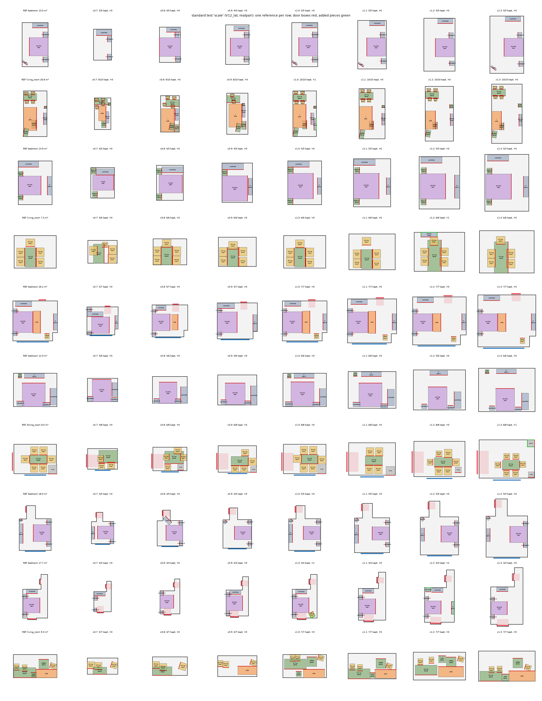
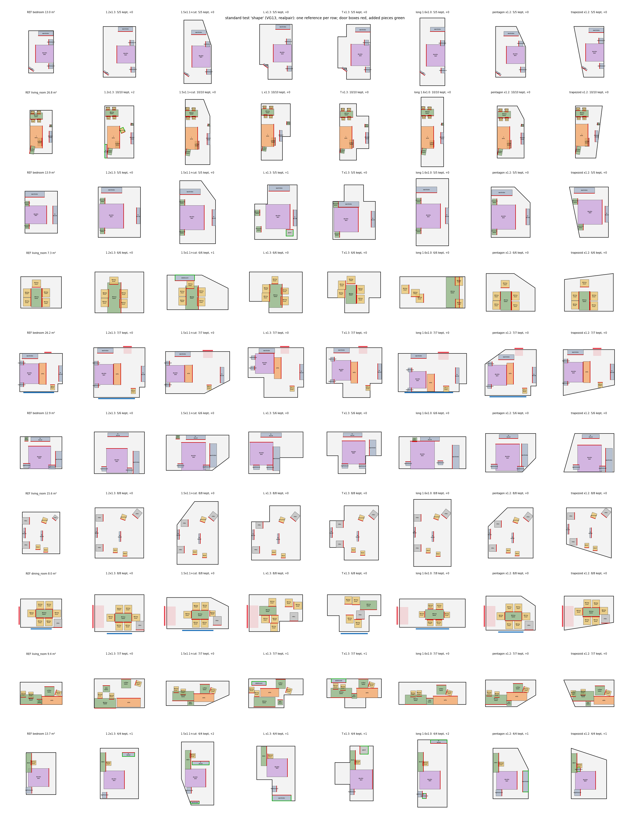
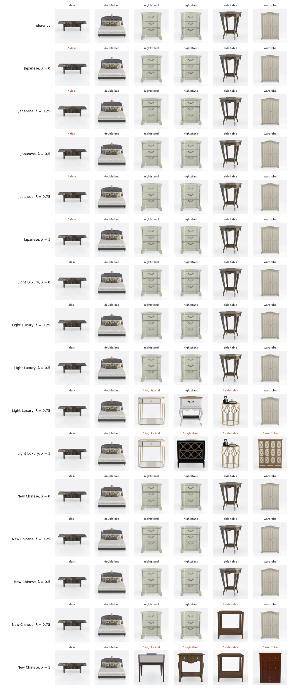
Table 15. Symbols used in this paper.
| symbol | meaning |
|---|---|
| \(A, B\), \(P_B\), \(N\) | reference room, target room, its polygon, the reference's number of pieces |
| \(c_i, s_i, p_i, \theta_i, k_i\) | category, size, position, yaw, asset of piece \(i\) |
| \(\phi_{uv}, d, D\) | relation descriptor of a pair, its distance (Eq. 1), the layout distance (Eq. 2) |
| \(\tilde p_i\), \(c_A, c_B\) | framed position (Eq. 3), the rooms' centroids |
| \(x_0, x_1, x_t, v_\vartheta, \eta\) | framed reference, designer's layout, interpolant, velocity, interpolant noise |
| \(\sigma, h^+, h^-, q^\pm_g\) | room state, add and delete hotspots, the designer's shares per cell |
| \(S_k, \mathcal A, \mathcal R, \ell(e)\) | an intermediate state, the edits allowed there, the designer's remaining edits, an edit's logit |
| \(\pi, \Pi_K\) | an edit plan, the \(K\) candidate plans |
| \(\Pi_\theta, M_i^h, F_i, \tau_{ab}, \mathcal D, \mathcal Q\) | projection, mesh cross-section, footprint, footprint tolerance, door boxes, reachability squares |
| \(\lambda, a_i, E_k, \bar s_k, n_a, n_s\) | degree of style change, appearance asked for, a catalogue asset's appearance and size, normalisers |
| \(z_k, \gamma, \mu\) | appearance vector (Eq. 9), temperature, label-term weight |